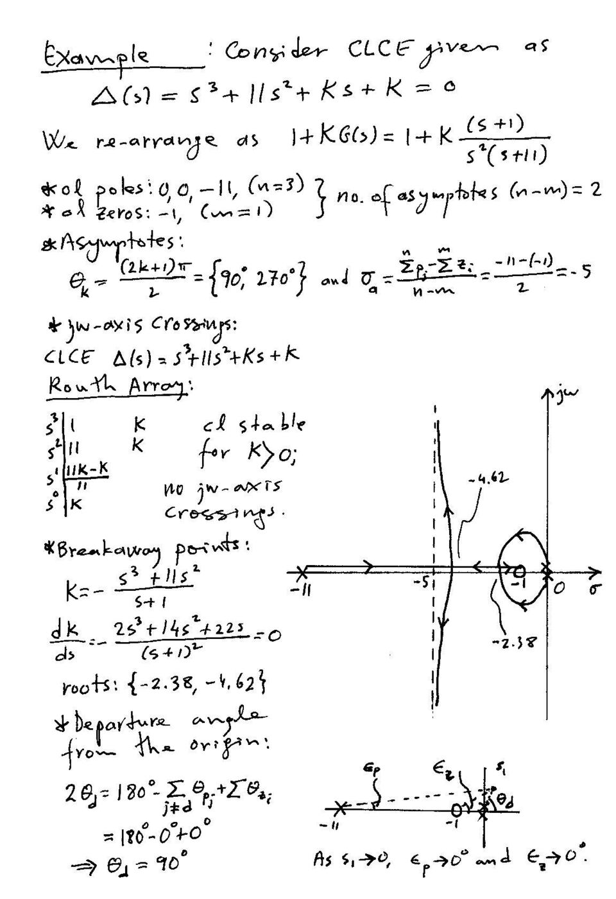
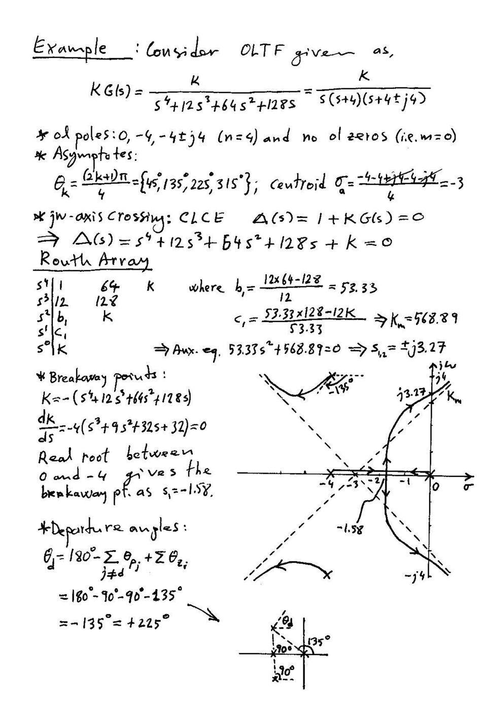

· EEM322
EEM322 Denetim Sistemleri: Kök Yer Ek Örnekleri ve 2009 Ders Notları (Alper Uraz)
EEM322 – Denetim Sistemleri · 20.04.2009 · 18.10.2026
EEM322 arşivindeki Alper Uraz örnek setinin iki kök yer sayfası ile bir arkadaşın 20 Nisan 2009 tarihli kök yer ders notları bu yazıda toplandı. Öğretim üyesinin taranmış iki sayfası yazının sonunda ZIP olarak indirilebilir. Öğrenci notları fotoğraflanmış sayfalardan metne aktarıldı; bu fotoğraflar yayımlanmadı. Genel konu anlatımı Ders 8 yazısında bulunuyor.
Karakteristik denklem ve çizim kuralları
Defterin “Golden rule” başlığı 1 + KG(s)H(s) = 0 karakteristik denklemidir. Kök yer eğrisi K değişirken bu denklemin köklerinin hareketini gösterir.
- K = 0 için dallar açık döngü kutuplarından başlar.
- Sonlu sıfırlarda bitmeyen dallar sonsuza gider.
- n kutup, m sıfır için n − m asimptot vardır; n = m olduğunda sonsuza giden asimptot yoktur.
- Eğri gerçek eksene göre simetriktir.
- Gerçek eksen üzerinde, sağında kalan gerçek kutup ve sıfırların toplam sayısı tek olan parçalar eğriye aittir.
- Asimptot açıları θ_k = (2k + 1)π/(n − m).
- Asimptot merkezi σ_a = (Σp_i − Σz_i)/(n − m).
- Eğri üzerindeki bir noktada kazanç büyüklüğü |K| = 1/|G(s)H(s)|.
Bir karmaşık kutuptan ayrılma açısı, diğer kutup ve sıfırların açı katkılarıyla bulunur: θ_d = 180° − Σθ_p + Σθ_z. Sıfıra varış açısı aynı açı koşulundan türetilir. Defterde “ayrılma” ve “birleşme” noktaları ayrı çizimlerle gösterilmiş.
Uraz örneği: s³ + 11s² + Ks + K = 0
Denklem 1 + K(s + 1)/[s²(s + 11)] = 0 olarak düzenlenir.
- Açık döngü kutupları: 0, 0, −11.
- Açık döngü sıfırı: −1.
- Asimptot sayısı: 2; açılar 90° ve 270°.
- Asimptot merkezi: [−11 − (−1)]/2 = −5.
Routh tablosu:
| Satır | İlk eleman | İkinci eleman |
|---|---|---|
| s³ | 1 | K |
| s² | 11 | K |
| s¹ | 10K/11 | 0 |
| s⁰ | K | 0 |
K > 0 için sistem kararlıdır; bu aralıkta sanal eksen kesişimi yoktur.
K = −(s³ + 11s²)/(s + 1)
dK/ds = −(2s³ + 14s² + 22s)/(s + 1)² = 0
Orijin dışındaki adaylar s ≈ −2.38 ve −4.62. Orijindeki çift kutuptan ayrılma açıları ±90°’dir. Gerçek dal −11’den −1’e doğru ilerler; karmaşık dallar bu gerçek eksen kesimiyle birleşip yeniden ayrılır.

Uraz örneği: dördüncü dereceden açık döngü
KG(s) = K/[s⁴ + 12s³ + 64s² + 128s]
Payda s(s + 4)[(s + 4)² + 16] biçiminde ayrılır. Kutuplar 0, −4, −4 ± j4; sonlu sıfır yoktur. Dört asimptotun açıları 45°, 135°, 225°, 315°, merkezi −3.
Karakteristik denklem:
Δ(s) = s⁴ + 12s³ + 64s² + 128s + K = 0
Routh tablosu:
| Satır | İlk eleman | İkinci eleman | Üçüncü eleman |
|---|---|---|---|
| s⁴ | 1 | 64 | K |
| s³ | 12 | 128 | 0 |
| s² | 160/3 ≈ 53.33 | K | 0 |
| s¹ | 128 − 9K/40 | 0 | 0 |
| s⁰ | K | 0 | 0 |
Sınır kazanç K_m = 5120/9 ≈ 568.89. Yardımcı denklem (160/3)s² + 5120/9 = 0 olduğundan sanal eksen kesişimi s = ±j√(32/3) ≈ ±j3.27. Kararlı kazanç aralığı 0 < K < 568.89.
Ayrılma noktası için:
K = −(s⁴ + 12s³ + 64s² + 128s)
dK/ds = −4(s³ + 9s² + 32s + 32) = 0
−4 ile 0 arasındaki gerçek kök yaklaşık −1.58. Üst karmaşık kutuptan ayrılma açısı:
θ_d = 180° − 90° − 90° − 135° = −135° = 225°.

2009 defteri: K/[s(s + 1)(s + 3)]
Karakteristik denklem s³ + 4s² + 3s + K = 0 olarak yazılmış. Ayrılma için K = −s³ − 4s² − 3s ve 3s² + 8s + 3 = 0 çözülür. Notta, kök yer eğrisindeki ayrılma noktasının −1 ile 0 arasında seçileceği belirtilmiş.
Not: Denklemin iki kökü (−4 ± √7)/3’tür. Yaklaşık −0.451 olan kök uygun gerçek eksen parçasındadır; yaklaşık −2.215 olan aday −3 ile −1 arasına düştüğünden K > 0 kök yer eğrisine ait değildir.
2009 defteri: K/[s(s + 1)(s + 2)]
“Example 5-4” başlıklı çizimde kutuplar 0, −1, −2; asimptot merkezi −1 ve asimptot açıları 60°, 180°, 300° olarak verilmiş. Eğrinin gerçek eksenden ayrılma noktası s ≈ −0.423. Kritik kazanç K_c = 6, sanal eksen kesişimi ±j√2.
Bu değerler s³ + 3s² + 2s + K = 0 karakteristik denklemiyle tutarlıdır. Asimptotlara ve kutupların hareket yönlerine ait fotoğraf çizimleri metinle anlatıldı.
2009 defteri: s³ + 7s² + 16s + K + 10 = 0
Açık döngü biçimi:
1 + K/[(s + 1)(s² + 6s + 10)] = 0
Kutuplar −1 ve −3 ± j; sonlu sıfır yoktur. Üç asimptotun açıları 60°, 180°, 300°; merkez −7/3 ≈ −2.33.
Routh ilk sütunu 1, 7, [112 − (K + 10)]/7, K + 10’dur. Dolayısıyla kritik kazanç K_m = 102. Yardımcı denklem 7s² + 112 = 0, kesişim ±j4.
Not: Defterin ilk çiziminde kesişimin yanına K_m = 112 yazılmış, sonraki sayfadaki Routh hesabında 102 bulunmuştur. 112 değeri K + 10’dur; kritik K = 102’dir.
Ayrılma adayları dK/ds = −(3s² + 14s + 16) = 0 denkleminden −2 ve −8/3 ≈ −2.67. Üst kutuptan ayrılma açısı notta 180° − 90° − 153° ≈ −63° olarak hesaplanır.
Yaklaşık ζ = 0.7 için kutup seçimi
Defterde yaklaşık 45° doğrusu üzerinde −a ± ja kutupları ve üçüncü kutup −b kabul edilmiş:
Δ(s) = (s + b)(s² + 2as + 2a²)
Katsayı eşleştirme:
- 2a + b = 7
- 2a² + 2ab = 16
- 2a²b = 10 + K
Buradan a² − 7a + 8 = 0; uygun kök yaklaşık a = 1.44, b = 4.12. Defterde K ≈ 7.09, kutuplar −4.12 ve −1.44 ± j1.44 verilmiş.
Not: 45° doğrusu tam olarak ζ = 1/√2 ≈ 0.7071’e karşılık gelir. Yuvarlamadan a = (7 − √17)/2 kullanılırsa K ≈ 7.0625 çıkar; defterdeki 7.09 ara değerlerin iki basamağa yuvarlanmasından kaynaklanır.